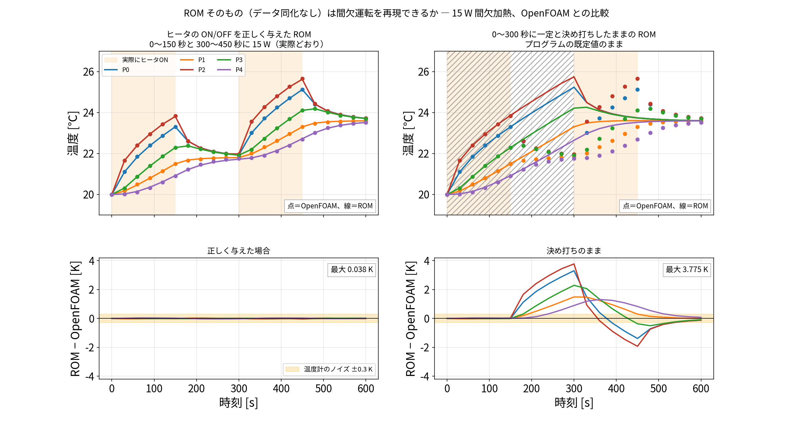
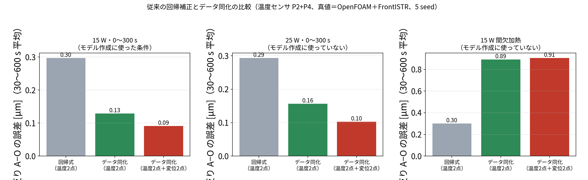
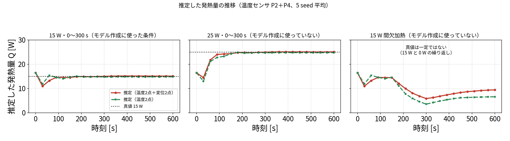

測れない場所の熱変形を、
測れる場所から当てる
― 温度だけでなく変位もデータ同化の「観測」に使う ―
OpenFOAM ＋ FrontISTR ＋ POD/Q-DEIM ROM ＋ EnKF（すべてオープンソース）
結論 ― 本日いちばん伝えたい3つの数字
評価点 A・O を
一度も測らずに
当てた反りの誤差
0.075
µm
真値の振幅 2.74 µm の 2.7 %
（真値＝OpenFOAM＋FrontISTR）
同じ A・O を
直接測ったときの
反りの誤差
0.137
µm
知りたい場所を測るより、
選んだ別の場所を測るほうが良い
係数を決めていない条件で
従来の回帰補正と
比べた誤差の比
1/3
回帰 0.29 → 同化 0.10 µm
発熱量そのものも 25.07 W と推定
（真値 25 W）
いずれも真値は OpenFOAM＋FrontISTR の計算結果。実機での検証は未実施です。
本日の流れ
→ ← で移動します。各章はクリックで飛べます
背景 ― 工作機械の熱変形は、加工精度を直接悪くする1. 背景

ヒータ 15 W を 300 秒入れたときの温度上昇（OpenFOAM CHT）
何が起きるか
- 主軸モータ・送り系・切削熱で機械が温まる
- 温まった部分が伸び、工具先端が µm 単位でずれる
- 加工誤差の大きな割合が熱起因と言われる
解析だけでは合わない
- 熱伝達率・発熱量が分からない
- 運転条件が変わると前提が崩れる
そこでデータ同化
本当の問題 ― 知りたい場所には、センサを置けない1. 背景
知りたい場所工具先端（TCP）の変位。
これが加工精度そのもの
置けない理由加工中は切粉・クーラント・工具交換。
内部に熱電対は通せない
置ける場所機械の外側、コラム側面、
加工点から離れた構造部
だから問いはこうなる：
「置ける場所でどう測れば、置けない場所の変形が当たるのか」
― そして、その置き場所は設計できるのか。
従来のよくある形温度センサを多点に貼る → 回帰式や FEM で工具先端の変位を出す（温度が入力、変位が出力）
▼ 本研究
本研究の形温度センサ2点 ＋ 置ける場所の変位2点を観測として同化に入れる →
温度場・測っていない場所の熱変形・発熱量を同時に推定する
既存研究の4つの流派と、空いている場所1. 背景
①
回帰・機械学習
温度多点 → 変位を回帰／CNN で予測。弱点：学習した運転条件の外で外れる
②
詳細 FEM による補償
オフラインで FEM を解き、温度から変位を計算。弱点：境界条件が合わないと外れる
③
低次元化＋状態推定
ROM＋カルマンフィルタで温度場を推定（ETH Zurich 2024 ほか）。観測は温度のみ。変位は出力
④
直接測定による補償
変位計で測った量をそのまま補正に使う（NIST の「直接法」）。加工中は測れない。状態推定に戻さない
？
変位を「観測」として状態推定に戻す
③は変位を出力、④は補正対象として扱う。この間が空いている
文献調査は 2026-10-03 に英語5回・日本語1回の検索で実施。網羅的な調査ではありません。
いちばん近いのは ETH Zurich (2024)：ROM＋カルマンフィルタ、観測は温度のみ（25本中13本）、実機で熱変位 67.4 → 33.3 µm。
題材と計算の流れ ― 中空円筒の片側をヒータで温める2. 題材

OpenFOAM の温度場（左）を節点に補間して FrontISTR で熱変形を計算（右、誇張表示）
| 項目 | 設定 |
|---|
| 形状 | 中空円筒（外径 75、高さ 100 mm） |
| 加熱 | 外周の片側にヒータ 15 W、0〜300 秒 ON |
| 流体 | 空気（自然対流）、OpenFOAM CHT |
| 固体メッシュ | 20,696 セル（温度）／5,040 節点（変形） |
| 構造解析 | FrontISTR 熱弾性（底面固定） |
| 評価する量 | 上面 A・O（±28.7, 0, 100.5）mm の
反り（高さの差）Uz(A) − Uz(O) |
| 反りの振幅 | 最大 2.74 µm |
片側加熱なので円筒は傾くように反る。この反りが「工具先端のずれ」に相当します。
「正解」はどう作ったか ― 2段構えで検証する2. 題材
段階1：双子実験（ROM 真値）
同化に使うのと同じ ROM で「正解」を作り、ノイズを足して観測にする。
→ モデルの誤差がない理想条件。アルゴリズムが正しく動くかを確かめる
▼ これだけでは「自分のモデルで自分を当てた」ことにしかならない
段階2：実ソルバ真値（本発表の主な結果）
真値＝OpenFOAM の固体温度場と、その温度を各時刻 FrontISTR に入れて計算した全節点の変位（21 時刻 × 3 条件）。
同化モデルは ROM のまま。→ モデル誤差を含んだ条件での検証
▼ 残っている段階
段階3：実機（未実施）
実機での検証は行っていません。設計案のみ（IoT 実験として別途計画）。本発表の数値はすべて計算で作った真値です。
観測ノイズ温度 \(\sigma_T = 0.30\) K、変位 \(\sigma_u = 0.30\) µm
EnKF60 メンバー、30 秒ごと × 20 サイクル、乗法インフレーション 1.02、5 seed の平均
道具① 軽いモデル ― 温度場は「2つの型」でほぼ説明できる3. ROM
やったことOpenFOAM の温度履歴（20,696 セル × 121 時刻）を特異値分解し、場を「型（モード）×時間の係数」の足し算に分解した

左から平均場、モード1（91.8 %）、モード2（8.1 %）、モード3（0.1 %）。各パネルは独立スケール
モード1（91.8 %）全体が同じだけ温まる型。これだけでは反りは生まれない
モード2（8.1 %）ヒータ側と反対側の温度差の型。反りを決めるのはこれ
合計 99.89 %121 項のうち2項で説明できる。安全をみて5モードを採用し、EnKF の状態はこの5つの係数にする
道具① 軽いモデル ― Q-DEIM で代表5点を自動で選び、600 秒を 31 ms に3. ROM

Q-DEIM（列ピボット付き QR 分解）が選んだ代表5点 P0〜P4。ヒータ側と反対側に分かれて並ぶ
考え方
- 5つの型の係数を決めるには、うまい5点の温度が分かればよい
- その5点を、モード行列の QR 分解が自動で選ぶ
ROM の形
\( C_i \dot T_i = \sum_j K_{ij}(T_j - T_i) + h_i A_i (T_\text{air} - T_i) + Q_i \)
5点の集中熱容量モデル。 \(C\) ・ \(K\) は OpenFOAM に合うよう最小二乗で逆算（残差 0.014 K）
600 秒の前進積分が 31 ms。
60 メンバー × 20 サイクルでも数十秒で終わる
5点から全 20,696 セルを復元するのは gappy-POD（擬似逆行列）。
道具① の前提 ― 発熱は「P2 の1点」に集中して与えている3. ROM
| 実際のヒータ | ROM |
|---|
| 場所 | 外周の面
（約 5,000 mm²） | P2 の1点だけ |
| 与え方 | 面全体に分散 | 15 W を全部 P2 に |
heat[:, 2] = q * 15.0 / C[2]
5点のうち2列目（P2）だけが非ゼロ。 \(C_2 = 93.4\) J/K
なぜ1点集中でも合うのか
この前提のもとで \(C\) ・ \(K\) を OpenFOAM に合わせて逆算しているため、
面に広がる効果が係数に吸収される。

ROM（線）と OpenFOAM（点）。ROM 単体の誤差は最大 0.038 K＝温度センサのノイズ 0.3 K の約 1/8
近似が効くのはどこか：発熱量が変わる・加熱のしかたが変わる → 作り直し不要 ／
熱源の位置・形が変わる → ROM の作り直しが必要
道具① はどこまで使えるか ― 係数を決めていない条件で確かめる3. ROM

ROM 単体（データ同化なし）と OpenFOAM の比較。間欠加熱（150 秒ごとに ON/OFF）。左＝ON/OFF を正しく与えた ROM／右＝「0〜300 秒 一定」のまま動かした ROM
15 W・連続 0.038 KROM の係数を決めた条件そのもの。センサノイズ 0.3 K の約 1/8
25 W／間欠加熱 0.038 K係数を決めていない条件でも、ON/OFF さえ正しく与えれば同じ精度
ON/OFF を与えないと 1.775 K「0〜300 秒 一定」と仮定したまま。ノイズの約6倍ずれる
ROM は発熱量・加熱のしかたが変わっても使える。
条件はヒータの ON/OFF をモデルに正しく与えること。
同化後に5点から復元した全 20,696 セルも、代表点でないセルを含めてノイズ 0.3 K の中に収まる。
道具② 熱感度 \(W\) ― 「温度が 1 K 上がると、どこが何 µm 動くか」4. 熱感度 W

FrontISTR で計算した熱感度の分布。底面固定なので、上面ほど大きく動く
\( K_s\, u = H_T\, T \quad\Longrightarrow\quad u = \underbrace{K_s^{-1} H_T}_{\textstyle W}\, T \)
\(K_s\)＝剛性行列、\(H_T\)＝温度の熱荷重への変換、\(W\)＝熱感度行列［µm/K］
\(W\) の読み方
- 1行＝ある点のある方向の変位
- 1列＝ある場所の温度
- 行の中身＝その変位が、どの温度にどれだけ反応するか
反り A−O に対する5点温度の感度
\( w = (0.47,\; -0.65,\; 0.60,\; 0.04,\; -0.46) \) µm/K
＝ 5点すべてに非ゼロ。符号が ＋と− に分かれているのが肝心
線形熱弾性なので、\(W\) は温度に依らず一度計算すれば使い回せる。
道具② を速く作る ― 必要な行だけ随伴法で取り出す（1/1300 の時間）4. 熱感度 W
素朴にやると
「節点 \(j\) だけ 1 K 上げて解く」を全節点ぶん繰り返す
→ 5,040 回の FEM 解析（54.4 秒）
必要なのは「ある点の変位」だけ
\( W[i,:] = e_i^{\mathsf T} K_s^{-1} H_T = \lambda_i^{\mathsf T} H_T \), where \( K_s \lambda_i = e_i \)
\(e_i\)＝知りたい自由度に 1 を立てた単位荷重。\(K_s\) は対称なので1回解けば \(W\) の1行が出る
| やり方 | FEM を解く回数 | 時間 |
|---|
| 全部作る（列で作る） | 5,040 回 | 54.4 秒 |
| 随伴法（A・O の2行だけ） | 2 回 | 0.042 秒 |
両者の一致は \(1.6\times10^{-15}\)（数値誤差の範囲）。

随伴法（単位荷重）で求めた \(W\) の行と、全部作ってから抜き出した行の比較
補足：全節点の分布が必要なときは、
\(W\Phi = K_s^{-1}(H_T\Phi)\) と括弧を付け替えてFrontISTR を6回（平均場 1 回＋モード5本）解けばよい。
5,040 回ではなく 6 回で、全 5,040 節点 × 3 方向＝15,120 通りの感度が出る。
同化の中身 ― 何を状態にして、何を観測にするか4. 熱感度 W
状態\( z = (T_0, T_1, T_2, T_3, T_4,\; Q,\; h) \) ← 温度5点 ＋ 発熱量 ＋ 放熱係数（パラメータも一緒に推定する）
温度の観測\( y_T = T_{\text{(そのセル)}} + \varepsilon,\; \sigma_T = 0.30 \) K
変位の観測\( y_u = \underbrace{w^{\mathsf T} T}_{\text{熱感度}\,\times\,\text{温度}} + \varepsilon,\; \sigma_u = 0.30 \) µm
変位の観測演算子が \(w^{\mathsf T}\)（熱感度 \(W\) の行）であること ― 仕掛けはこれだけです。
温度計は1本で1点しか見ない。変位計は1本で5点すべてに触れる（\(w\) が全点非ゼロ）。

左＝観測データの作り方（真値 → ノイズ）／右＝メンバーごとの予報観測の作り方／下＝EnKF の更新式。
同化ループの中で FrontISTR は一度も呼ばない（変位は \(D\) との積で出る）
A
切り口 A
変位は「結果」ではなく
「情報源」である
熱変形は補正すべき誤差であると同時に、
温度場を知るための情報でもある。
変位計1本の読みは、5点すべての温度の重み付き和。
だから温度計のない点の温度まで直る。
変位計だけが、温度計のない点の温度を直している5. 切り口A

1サイクルの更新量を「温度計の寄与」と「変位計の寄与」に分けたもの（温度計は P2・P0 の2点のみ）
| 時刻 | 点 | 温度計の寄与 | 変位計の寄与 |
|---|
| 30 s | P3 | ―（センサなし） | −4.97 K |
| 30 s | P4 | ―（センサなし） | −7.67 K |
| 150 s | 全体 | 0.000 K（もう残差なし） | まだ直し続ける |
温度計の残差が 0 になった後も、変位計だけが温度場を直し続ける。
温度計では見えていない情報を持っているということ。
結果への効き方
| 観測 | 温度場 RMSE | 発熱量 \(Q\)（真値 15 W） |
|---|
| 温度2点のみ | 0.503 K | 14.05 W |
| ＋変位2点 | 0.160 K | 14.89 W |
では「変位計は温度計より情報量が多い」のか ― 正直に比べる5. 切り口A
条件センサの本数（計4本）と場所をそろえ、そこで何を測るかだけを変える。
温度2点（P2・P0）は共通、上面 A・O に温度計2本 or 変位計2本。真値＝ROM 双子実験、5 seed、エラーバーは seed のばらつき
温度場なら互角温度計 0.132 K 対 変位計 0.145 K。差はエラーバーに埋もれる（勝敗 2/5）
反りなら変位計温度計 0.201 µm 対 変位計 0.135 µm（勝敗 4/5）。知りたい量を直接測っているため
両方つけても6本にしても 0.127 K / 0.136 µm。伸びしろは小さい
だから「変位計のほうが情報量が多い」とは言えません。
変位計の本当の価値は ― 温度計を置けない場所に置けること ― にあります。
B
切り口 B ― 本日の目玉
測れない場所を、
測れる場所から当てる
工具先端は測れない。
ではどこを測れば、測れない場所が当たるのか。
評価点 A・O を一度も観測せずに、
別の場所の変位2点だけで A・O の反りを当てる。
問題設定 ― A・O は一度も測らない6. 切り口B

赤＝温度センサ／緑＝選定した変位2点（矢印＝測る方向）／橙＝比較用 B・C／黒＝評価点 A・O（測らない）
| 役割 | 場所 [mm] | 測るもの |
|---|
| 温度センサ（共通） | P2 (36.5, 6.9, 50.8)
P0 (21.3, −1.6, 51.6) | 温度 |
| 選定した変位1点目 | (9.7, −36.2, 100.5) | \(U_x\) |
| 選定した変位2点目 | (−34.6, 14.4, 100.5) | \(U_z\) |
| B・C（比較用） | (±28, 0, 75) A・O の真下 | \(U_z\) |
| 評価点 A・O | (±28.7, 0, 100.5) | 測らない |
前の結果（blog_004）は、評価している A・O をそのまま観測に使っていました（循環）。
ここではA・O から 12 mm 以内の節点を候補から除外して、循環を断っています。
どこを測るか ― 測る前に、机上の計算だけで決める6. 切り口B
\( \sigma_S^2 \;=\; w^{\mathsf T}\Big(\,B - B H_S^{\mathsf T}\big(H_S B H_S^{\mathsf T} + R\big)^{-1} H_S B\,\Big)\, w \)
括弧の中はカルマンフィルタの更新式そのもの＝測った後に残る「温度のあいまいさ」。
それを \(w\) ではさむと 残る「反りのあいまいさ」になる。単位は µm、小さいほど良い。
| 記号 | 中身 | どこから来るか | 測定値を使うか |
|---|
| \(w\) | 反り A−O に対する5点温度の熱感度
(0.47, −0.65, 0.60, 0.04, −0.46) µm/K | FrontISTR（随伴法 2 回 or \(W\Phi\) で 6 回） | 使わない |
| \(B\) | 5点の温度が「どれくらい・どう連動して」ばらつくか | ROM を 4,000 通り回して数える | 使わない |
| \(H_S\) | 候補 \(S\) を測るという操作（\(W\) の該当行） | FrontISTR | 使わない |
| \(R\) | センサのノイズ（変位 0.3 µm） | 仕様 | 使わない |
ここまで測定値は一切使っていません。
FrontISTR の熱感度と ROM のばらつきだけで、センサを買う前・取り付ける前に置き場所が決まります。
考え方は「いま分かっていないことを、いちばん多く教えてくれる点を選ぶ」。目的（反り A−O）を \(w\) で指定しているので、目的が変われば選ばれる点も変わります。
選び方 ― 14,754 通りを全部採点し、1点選んだら採点をやり直す6. 切り口B
ステップ1 候補を並べるFrontISTR を6回解けば、全 5,040 節点 × 3 方向 ＝ 15,120 通りの感度が出る。
A・O から 12 mm 以内を除いて 14,754 通り
ステップ2 全部採点する14,754 通りについて \(\sigma_S\) を計算。表計算で全行に式を入れて最小値を探すのと同じこと
ステップ3 1位を採る1.186 → 0.347 µm（1本で 1/3 以下）
ステップ4 採点をやり直す2位は1位とほぼ同じ場所。
1点目を測ったことにして再採点 → 0.347 → 0.256 µm

左＝1点目を選ぶときの採点（色が薄いほど良い）／中＝1点目を測った前提で再採点／右＝ \(\sigma\) が下がる様子。
左と中で「良い場所」が移動しているのが肝心
1点目は上面の ±y 側（両側の影響を受ける）／
2点目はヒータの反対側（−x 側）（1点目で分からなかった情報が欲しくなる）
― 「良い2点」は「良い1点を2つ」ではない。
結果① ― 知りたい場所を測らないほうが、正確だった6. 切り口B
条件真値＝ROM の双子実験、EnKF・5 seed 平均、加熱期 30〜300 秒。
温度2点（P2・P0）は共通で、変位2点の置き場所だけを変える。A・O は一度も観測しない
| 変位2点をどこに置くか | 反り A−O | Uz(A) | 温度場 |
|---|
| 変位なし（温度2点のみ） | 0.756 µm | 0.234 µm | 0.528 K |
| A・O 自身を測る（循環・参考） | 0.135 µm | 0.138 µm | 0.145 K |
| B・C（A・O の真下 25 mm） | 0.185 µm | 0.151 µm | 0.175 K |
| 選定した2点 | 0.076 µm | 0.103 µm | 0.126 K |
| 底面近く \(U_z\)（悪い例） | 0.559 µm | 0.196 µm | 0.408 K |
A・O を一度も測らずに 0.076 µm（振幅 2.74 µm の 2.8 %）。
直接測った場合（0.135 µm）より正確。置き場所で7倍変わる
なぜ直接測るより良いのか（解釈）
A・O の反りは最大 2.7 µm だが、変位計のノイズは 0.3 µm ある。選定した点はもっと大きく動くので、同じノイズでも情報が多く取れる。
この解釈は別計算では確かめていません。
結果② ― 真値を OpenFOAM＋FrontISTR にして、3条件で確かめ直す6. 切り口B
条件温度の真値＝OpenFOAM の固体温度場、変位の真値＝その温度を各時刻 FrontISTR に入れて計算した全節点の変位（21 時刻 × 3 条件）。
同化モデルは ROM のまま。A・O は一度も観測しない。5 seed 平均

黒＝真値（OpenFOAM＋FrontISTR）、灰＝変位なし、橙＝B・C、緑＝選定2点
反り A−O の誤差 [µm]（加熱期の平均）
| 変位2点の置き場所 | 15 W | 25 W | 間欠加熱 |
|---|
| 変位なし（温度2点のみ） | 0.769 | 1.408 | 0.630 |
| A・O 自身（循環・参考） | 0.137 | 0.153 | 0.100 |
| B・C（真下 25 mm） | 0.187 | 0.193 | 0.143 |
| 選定2点（上面） | 0.075 | 0.083 | 0.071 |
| 底面近く（悪い例） | 0.581 | 1.096 | 0.480 |
・3条件すべてで 0.07〜0.08 µm。ROM 真値のときと同じ結論
・3条件すべてで、直接測るより正確
・25 W（係数を決めていない条件）では変位なしの 1.408 µm から 17 倍改善
・置き場所が悪いと 25 W で 1.096 µm＝ほとんど改善しない
→ 「置き場所を設計する」ことに意味がある
結果③-1 どう比べたか ― 決め方だけを変えて、ほかは全部そろえる6. 切り口B
なぜやるかここまでは「選定2点」と「底面近く（悪い例）」の比較で、
選び方そのものが良いという証拠になっていない。そこで候補 14,754 通り・センサ本数・試験・真値・乱数をすべて同じにして、決め方だけを変える
| 決め方 | 何を小さくするか | 狙っている対象 |
|---|
| ランダム（20 通り） | ― | ― （下限の目安） |
| よく動く点に置く | ― 温度が変わったとき変位がいちばん大きく動く点 | ― |
| Q-DEIM（QR 列ピボット） | モード行列の条件数 | 温度場 |
| A最適 | 温度5点の事後共分散の trace | 温度場全体 |
| D最適 | 温度5点の事後共分散の det | 温度場全体 |
| 目的指向（本研究） | \( \sigma_S^2 = w^{\mathsf T}(\cdots)w \) | 反り A−O |
そろえたもの①候補集合 14,754 通り（全 5,040 節点×3 方向から A・O 近傍を除外）。使う情報は FrontISTR の \(W\) と ROM の \(B\) だけで、測定値は使わない
そろえたもの②センサの本数（温度2点＋変位2点）、A・O を一度も観測しない holdout、EnKF 60 メンバー
そろえたもの③真値＝OpenFOAM＋FrontISTR、15 W・25 W・間欠加熱の3条件、同じ 5 seed
比較の軸はここです ―
教科書的な方法は「温度場をいちばん良く知る配置」を選び、本研究だけが「反りをいちばん良く知る配置」を選ぶ。
温度場を良く知れば反りも分かるはずだ ― これが正しいなら、A最適と本研究は同じ答えになるはずです。
結果③-2 どこが選ばれたか ― 同化を回す前に、場所を見る6. 切り口B

上面（z=100.5 mm）を真上から見た図。6つの決め方のうち3つを抜粋（残り3つは配布資料に）
「よく動く点」は 5 mm しか離れないよく動く点は固まって存在するので、単純に上位2つを採ると
ほとんど同じ場所を2回測ることになる（他の決め方は 46〜67 mm）
式は測る前に予言していたA・O 自身を測る構成の予測 \(\sigma\) は 0.319 µm で、
目的指向の 0.256 µm より大きい。「直接測るのが最善ではない」は同化を回す前に出ていた
結果③-3 同じ試験にかけた結果6. 切り口B
目的指向が3条件とも1位0.075／0.083／0.071 µm。ただし2位の A最適（0.090）との差は 15〜20 %。
目的の指定には意味があるが、効き目は限定的
「よく動く点に置く」は失敗する0.448〜1.075 µm でランダムより悪い。
2点が 5 mm しか離れていないため
予測の順位はほぼ当たる測る前の \(\sigma\) の順位と実際の順位は、D最適と Q-DEIM の入れ替わり1組だけ（順位相関 0.9）
「何を最小化するか」が結果を決めます。
D最適は自分の指標（det）では6つの中で最良＝自分の土俵では勝っているのに、反りの誤差では負けます。
温度場全体を良く知ることと、反りを良く知ることは別です。
目で見る ― 色＝温度、形＝熱変形（約 4,000 倍に誇張）6. 切り口B

左＝真値／中＝温度2点だけ／右＝温度2点＋別の場所の変位2点（A・O は一度も測らない）。
●赤＝温度センサ（3枚とも共通）／■緑＝変位計（右のみ）／●黒＝評価点 A・O（測らない。3枚とも共通）。seed 20260913
| \(t=150\) 秒 | 真値 | 中：温度2点のみ | 右：＋変位2点（選定） |
|---|
| 反り A−O | 2.57 µm | 1.38 µm | 2.56 µm |
| 誤差 | ― | 1.19 µm | 0.01 µm |
C
切り口 C ― 裏づけ
学習していない運転条件でも、
使える
回帰モデルは、係数を決めた条件を外れると外れる。
物理モデル＋データ同化は、外挿できる。
従来の回帰補正と、同じ温度センサ・同じノイズで正面から比べました。
従来の回帰補正との比較 ― 同じ温度センサ、同じノイズで7. 切り口C
比べた相手
\( U_z(A)-U_z(O) = c_0 + c_1 \Delta T_{s1} + c_2 \Delta T_{s2} \)
係数は 15 W の OpenFOAM＋FrontISTR の結果（21 時刻）で最小二乗。使うときは同化と同じ 0.3 K のノイズを足す（同じ 5 seed）。温度センサは P2＋P4

反り A−O の誤差（30〜600 秒の平均）。左＝15 W、中＝25 W、右＝間欠加熱
| 真値の条件 | 回帰式 | 同化
温度2点 | 同化
温度2点＋変位2点 |
|---|
| 15 W（係数を決めた条件） | 0.30 | 0.13 | 0.09 |
| 25 W（決めていない条件） | 0.29 | 0.16 | 0.10 |
| 間欠加熱（ON/OFF を与える） | 0.30 | ― | 0.08 |
| 間欠加熱（ON/OFF を与えない） | 0.30 | 0.89 | 0.91 ← 負け |
単位は µm。最下行は同化が負けた条件です。
加熱のしかたがモデルと合っていれば回帰式の約 1/3。
合っていないと約3倍で負ける。
ROM の中では 300 秒以降は発熱 0 なので、2回目の山を再現できないのが原因。
ON/OFF を与えれば 0.91 → 0.08 µm に戻る。時刻が分からなくても、
発熱を時間で変わる値として推定すれば 0.18 µm（それでも回帰式より小さい）。
そして回帰式には原理的にできないこと ― 発熱量そのものを当てる7. 切り口C

推定した発熱量 \(Q\) の推移。左＝15 W、中＝25 W（係数を決めていない条件）、右＝間欠加熱（真値は 15 W と 0 W の繰り返し）。
真値＝OpenFOAM＋FrontISTR、温度センサ P2＋P4、5 seed 平均
15 W → 14.89 W係数を決めた条件。30 秒で一度下振れした後、100 秒以降は真値に貼りつく
25 W → 24.9〜25.1 W係数を決めていない条件でも、200 秒以降は真値に貼りつく
間欠加熱は追えない真値が 15 W と 0 W を繰り返すのに、推定はなだらかにしか動かない（ON/OFF を与えれば解決）
回帰は「いまの温度から、いまの変位」しか出せない。
同化は「いま何ワット入っているか」まで出す。
― 発熱量が分かれば条件が変わった先の予測にも使える。これは物理モデルを中に持つことの違いです。
ただし放熱係数 \(h\) は 600 秒の計算では当たりません（時定数が足りない）。これは正直な限界です。
まとめ8. まとめ
切り口A 変位は「結果」ではなく「情報源」
変位計1本の読みは熱感度 \(W\) を通じて5点すべての温度の重み付き和。温度計のない点の温度まで直る
（温度場 0.503 → 0.160 K、発熱量 14.05 → 14.89 W）。
ただし同じ場所なら温度計とほぼ互角。変位計の価値は「置けること」
切り口B 測れない場所を、測れる場所から当てる（目玉）
評価点 A・O を一度も測らず、別の2点の変位で反りを 0.075 µm（振幅の 2.7 %）。
A・O を直接測るより正確（0.137 µm）。実ソルバ真値で3条件とも同じ結論。
置き場所は測定前に机上計算だけで設計できる（15,120 候補から \(\sigma_S\) 最小化＋再採点）。同じ候補・同じ試験でA最適 0.090／D最適 0.108／Q-DEIM 0.137 µm より小さい
切り口C 学習していない運転条件でも使える
係数を決めていない 25 W で、従来の回帰補正の約 1/3の誤差（0.10 対 0.29 µm）。
発熱量そのものも 24.9〜25.1 W と同定（回帰には原理的にできない）
実装OpenFOAM（CHT）＋FrontISTR（熱弾性）＋Python（POD/Q-DEIM・EnKF）。
すべてオープンソース、コードと解説を公開。ROM は 600 秒を 31 ms、熱感度は随伴法で 1/1300 の時間
正直な限界と、今後8. まとめ
言えないこと（限界）
| 限界 | なぜ |
|---|
| 実機で有効とは言えない | 真値はすべて計算（OpenFOAM＋FrontISTR）。実機検証は未実施 |
| 「初めて提案した」とは言わない | 文献調査は英語5回・日本語1回。網羅的ではない |
| EnKF・POD・変位の同化そのものは新しくない | いずれも既知の手法。新しいのは組み合わせと設計論 |
| 変位計が温度計より情報量が多いとは言えない | 同じ場所では互角だった |
| どんな機械でも有効とは言えない | 熱源の位置が変わると配置も変わる |
| 放熱係数 \(h\) は当たらない | 600 秒では時定数が足りない |
| 「直接測るより正確」の理由 | S/N 比という解釈。別計算で未確認 |
今後
| やること | 何が言えるようになるか |
|---|
| 実機実験（ヒータ＋熱電対＋変位計の試作：設計済・未実施） | 実機で成り立つか |
センサ数をそろえた比較
「温度計3本」対「温度計2本＋変位計1本」 | 変位計が温度計の代わりになるか |
| 候補が3点以上・別の目的量（工具先端の傾きなど）での配置比較 | 目的指向の一般性 |
| 文献調査の拡張（精密工学会・日本機械学会） | 新規性の確度 |
| ON/OFF を推定する定式化の一般化 | 運転条件を知らなくても使えるか |
それでも言えるのは ―
「知りたい場所を測らずに当てる」ことと、「その観測点を測定前に設計できる」ことを、
実ソルバ真値で定量的に示したことです。
コード・解説記事を公開しています
リポジトリ
github.com/kamakiri1225/
thermal-da-demo
OpenFOAM ケース・FrontISTR 入力・
Python（ROM／EnKF／配置選定）一式
解説記事（全8回）
kamakiri1225.github.io/
thermal-da-demo/
本発表の数値は、すべて記事内に
計算条件とコードつきで載せています
| blog_001 | OpenFOAM CHT → FrontISTR 熱膨張、面ごとの熱伝達率 | blog_005 | 推定対象が変わると最適センサも変わる |
| blog_002 | OI（最適内挿）― 3点モデルで手計算 | blog_006 | 温度2点＋変位2点の同化を1ステップずつ追う |
| blog_003 | EnKF ― 分身の散らばりで共分散を作る | blog_007 | 作った ROM はどこまで使えるか |
| blog_004 | POD/Q-DEIM で代表点を選ぶ ROM | blog_008 | 変位も同化に使う ― 本研究の主張と先行研究 |
ご清聴ありがとうございました